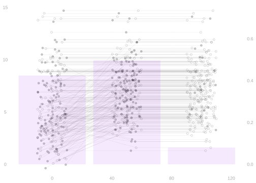
40 Misspecification and Inference
Summary
We’ll try out a misspecified regression model in a simple causal inference problem. We’ll get biased point estimates. We’ll look at the implications for inference. And we’ll see that misspecification is an increasingly big deal as sample size grows.
A Simple Example
An Experiment
$$ \newcommand{X}{} \newcommand{Y}{}
$$
\[ \newcommand{\alert}[1]{\textcolor{red}{#1}} \DeclareMathOperator{\mathop{\mathrm{E}}}{E} \DeclareMathOperator{\mathop{\mathrm{V}}}{V} \DeclareMathOperator{\mathop{\mathrm{\mathop{\mathrm{V}}}}}{\mathop{\mathrm{V}}} \DeclareMathOperator*{\mathop{\mathrm{argmin}}}{argmin} \newcommand{\inred}[1]{\textcolor{red}{#1}} \newcommand{\inblue}[1]{\textcolor{blue}{#1}} \]
We’re going to talk about causal inference with a multivalued treatment. Our context will be a randomized experiment with three treatments. A large employer is experimenting with a new benefit for their employees: subsidized gym memberships. They’re randomly selecting employees to participate in a trial program. Then randomizing these participants into three plans: Plan 1 is no gym membership, costing $0/month; Plan 2 is a gym membership that covers entry but not classes, costing $50/month; Plan 3 is a gym membership that covers entry and classes, costing $100/month. Then surveying them to see how often they go to the gym, e.g. in days/month. They’ll be able to use this information to decide what plan to offer everyone next year.
How We Think
We’ll think about this using potential outcomes. We imagine, for each employee, that there’s a number of times they’d go to the gym given each plan: \(y_j(0)\) is the number of days/month they’d go to the gym if they had no membership; \(y_j(50)\) is the number if they had a $50 membership; \(y_j(100)\) is the number if they had a $100 membership. And we’ll think about the effect of each plan on each employee: \(\tau_j(50) = y_j(50) - y_j(0)\) is the effect of a $50 gym membership vs none; \(\tau_j(100) = y_j(100) - y_j(50)\) is the effect of a $100 gym membership vs $50.
\[ \small{ \begin{array}{c|ccc|cc} j & y_j(0) & y_j(50) & y_j(100) & \tau_j(50) & \tau_j(100) \\ 1 & 5 & 10 & 10 & 5 & 0 \\ 2 & 10 & 10 & 10 & 0 & 0 \\ \vdots & \vdots & \vdots & \vdots & \vdots & \vdots \\ 327 & 0 & 0 & 20 & 0 & 20 \\ \vdots & \vdots & \vdots & \vdots & \vdots & \vdots \\ 358 & 15 & 18 & 20 & 3 & 2 \\ \vdots & \vdots & \vdots & \vdots & \vdots & \vdots \\ m & 10 & 10 & 5 & 0 & -5 \\ \end{array} } \]
Randomization
Treatment is randomized by rolling two dice for each of our 250 participants.1 If we roll 1-6: no membership (this happens 106 times). If we roll 8-12: $50 membership (this happens 124 times). If we roll exactly 7: $100 membership (this happens 20 times).
roll = sample(c(1:6), size=n, replace=TRUE) + sample(c(1:6), size=n, replace=TRUE)
W = case_match(roll,
1:6~0,
8:12~1,
7~100)Estimating An Average Treatment Effect
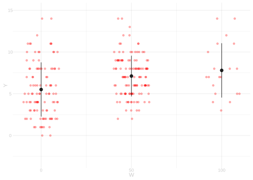
Let’s say we’re interested in the average effect of a $100 gym membership vs. a $50 gym membership. Because we’ve randomized, there’s a natural unbiased estimator of this effect.2 It’s the difference in means for the groups receiving these two types of membership.
\[ \tau(100) = \mathop{\mathrm{E}}\qty[\frac{1}{N_{100}}\sum_{i:W_i=100} Y_i - \frac{1}{N_{50}}\sum_{i:W_i=50} Y_i ] \quad \text{ for } N_x = \sum_{i:W_i=x} 1 \]
They want to know is whether paying for the $100 membership will increase attendance by at least 1 day/month. Why? Maybe their insurance company will cover the extra $50 if it has that effect.
Uninformative Interval Estimates
So what we want to know is whether this effect is at least 1. And we can’t rule that out. But we can’t ‘rule it in’ either. We just don’t have compelling evidence in one direction or the other. So let’s look at why that is. What did we do wrong when designing this experiment?
Variance

Let’s estimate the variance of our point estimate to see where the problem is.3 \[ \mathop{\mathrm{\mathop{\mathrm{V}}}}\qty[\sum_w \hat\alpha(w) \hat\mu(w)] = \sum_w \sigma^2(w) \times \mathop{\mathrm{E}}\qty[ \frac{\hat\alpha^2(w)}{N_w} ] \]
We can use this table. What do you see?
\[ \begin{array}{c|ccc} w & 0 & 50 & 100 \\ \hline \hat\sigma^2(w) & 10.56 & 5.94 & 10.59 \\ \hat\alpha^2(w) & 0 & 1 & 1 \\ N_w & 106.00 & 124.00 & 20.00 \\ \frac{\hat\sigma^2(w) \hat\alpha^2(w)}{N_w} & 0 & 0.05 & 0.53 \\ \end{array} \]
Variance

\[ \begin{array}{c|ccc} w & 0 & 50 & 100 \\ \hline \hat\sigma^2(w) & 10.56 & 5.94 & 10.59 \\ \alpha^2(w) & 0 & 1 & 1 \\ N_w & 106.00 & 124.00 & 20.00 \\ \frac{\hat\sigma^2(w) \alpha^2(d)}{N_w} & 0 & 0.05 & 0.53 \\ \end{array} \]
What I see is that we don’t have enough people randomized to the \(W=100\) treatment. The variance we get from just that one term is \(0.53\). Meaning the contribution to our standard error is \(\sqrt{0.53} \approx 0.73\). And since we multiply standard error by 1.96 to get an ‘arm’ for our interval, this ensures our arms are at least \(1.96 \times 0.73 \approx 1.43\) days wide.
If We Could Do It Again
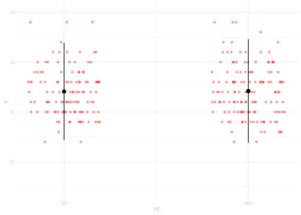
We’d assign more people to the \(W=100\) treatment to get a more precise estimate. Here’s what we’d get if we assigned people to each of our 2 relevant treatments with probability \(1/2\). This does what we need it to do: it gives us a confidence interval that’s all left of \(1\).
But We Can’t
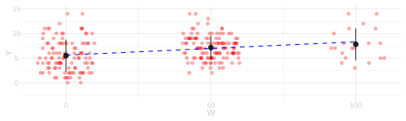
This is our data. We have to do what we can. So we get clever. Instead of estimating each subpopulation mean separately, we fit a line to the data. We take \(\hat\mu(w)\) to be the height of the line at \(w\) and \(\hat\tau(w)=\hat\mu(100)-\hat\mu(50)\) as before. And when we bootstrap it, we get a much narrower interval than the one we had before. But it’s not in the same place at all.
What’s Going On?
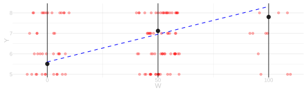
Let’s zoom in. It looks like our blue line overestimates \(\mu(100)\), underestimates \(\mu(50)\), and therefore overestimates \(\tau(100)=\mu(100)-\mu(50)\). That’s what it looks like when we compare to the subsample means, anyway. And that’s why we get a bigger estimate than we did using the subsample means.
Implications
This isn’t a disaster if all we want to know is whether our effect \(\tau(100)\) is >1, i.e., if we want to know whether the $100 plan gives us an additional gym day over the $50 one. No matter which approach we use, we get the same answer: we don’t know. Our interval estimates both include numbers above and below 1. But if what we wanted to know was whether \(\tau(100) > 0\), we’d get different answers. The difference in subsample means approach would say we don’t know. The fitted line approach would say we do know—in fact, that \(\tau(100) > 1/2\). And this is a problem. This is fake data, so I can tell you it’s wrong. The actual effect is exactly zero. In the data we’re looking at, the potential outcomes \(Y_i(50)\) and \(Y_i(100)\) are exactly the same.
The Data
# Sampling 250 employees. Our population is an even mix of ...
# 'blue guys', who go 1/4 days no matter what
# 'green guys', who go more if it's free but --- unlike the ones in our table earlier --- don't care about classes
n=250
is.blue = rbinom(n,1, 1/2)
Yblue = rbinom(n, 30, 1/4)
Ygreen0 = rbinom(n, 30, 1/10)
Ygreen50 = rbinom(n, 30, 1/5)
Y0 = ifelse(is.blue, Yblue, Ygreen0)
Y50 = ifelse(is.blue, Yblue, Ygreen50)
Y100 = Y50 ### <--- this tells us we've got no effect.
# Randomizing by rolling two dice. R is their sum
R = sample(c(1:6), size=n, replace=TRUE) + sample(c(1:6), size=n, replace=TRUE)
W = case_match(R, 1:6~0, 7:10~50, 11:12~100)
Y = case_match(W, 0~Y0, 50~Y50, 100~Y100)The Line-Based Estimator is Biased
We can do a little simulation to see that. We’ll generate 1000 fake datasets like the one we’ve been looking at. And calculate our estimator for each one. This gives us draws from our estimator’s actual sampling distribution. I’ve used them to draw a histogram. The mean of these point estimates is \(1.08\). Since our actual effect is zero, that’s our bias. The blue line. Our actual point estimate is off in the same direction—but a bit more than usual. It’s shown in black with a corresponding 95% interval. An interval that fails to cover the actual effect of zero. The green line.
The Resulting Coverage Is Bad
We can construct 95% confidence intervals the same way in each fake dataset. I’ve drawn 100 of these intervals in purple. You can see that they sometimes cover zero, but not as often as you’d like. 21 / 1000 ≈ 2% of them cover zero. That’s not good. If that’s typical of our analysis, people really shouldn’t trust us. So why have statisticians gotten away with fitting lines for so long? In essence, it’s by pretending we were trying to do something else.
What We Pretend To Do
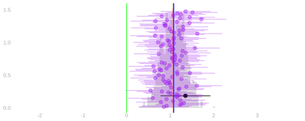
Our estimator—50 times the slope of the least squares line—is a good estimator of something. It’s a good estimate of the analogous population summary: 50 × the population least squares slope. That’s the red line. 981 / 1000 ≈ 98% of our intervals cover it. That sounds pretty good.
\[ \small{ \begin{aligned} \hat\tau(100) &= \hat\mu(100) - \hat\mu(50) = \qty(100 \hat a + \hat b) - \qty(50 \hat a + \hat b) = 50\hat a \\ \qqtext{where} & \hat\mu(x) = \hat a x + \hat b \qfor \hat a,\hat b = \mathop{\mathrm{argmin}}_{a,b} \sum_{i=1}^n \qty{Y_i - (aX_i + b)}^2 \\ \tilde\tau(100) &= \tilde\mu(100) - \tilde\mu(50)) = \qty(100 \tilde a + \tilde b) - \qty(50 \tilde a + \tilde b) = 50\tilde a \\ \qqtext{where} & \tilde\mu(x) = \tilde a x + \tilde b \qfor \tilde a,\tilde b = \mathop{\mathrm{argmin}}_{a,b} \mathop{\mathrm{E}}\qty[\qty{Y_i - (aX_i + b)}^2] \end{aligned} } \]
Problem: That’s Not What We Wanted To Estimate

The effects we want to estimate are, as a result of randomization, differences in subpopulation means. \[ \tau(50) = \mu(50) - \mu(0) \qand \tau(100) = \mu(100) - \mu(50) \]
The population least squares line doesn’t go through these means. It can’t. They don’t lie along a line. They lie along a hockey-stick shaped curve. This means no line—including the population least squares line—can tell us what we want to know. We call this misspecification. We’ve specified a shape that doesn’t match the data. This problem has a history of getting buried in technically correct but opaque language.
Language Games
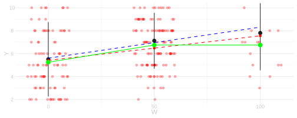
The widespread use of causal language is a recent development. In the past, people would do a little linguistic dance to avoid talking about causality. They’d talk about what they were really estimating as if it were what you wanted to know. This not only buried issues of causality, it buried issues of bias due to misspecification, e.g., due to trying to use a line to estimate a hockey-stick shaped curve. They’d say ‘The regression coefficient for \(Y\) on \(W\) is \(0.03\).’ You’d be left to interpret this as saying the treatment effect was roughly \(50 \times 0.03\). That’s wrong, but it’s ‘your fault’ for interpreting it that way. They set you up.
Misspecification and Inference

In particular, we’ll think about its implications for statistical inference. This boils down to what happens when our estimator’s sampling distribution isn’t centered on what we want to estimate. We can see that, if our sampling distribution is narrow enough, the coverage of interval estimates is awful. Today, we’ll think about how sample size impacts that. Something interesting happens. From a point-estimation perspective, more data is always good. Our estimators do get more accurate. But from an inferential perspective, it can be very bad. When we use misspecified models, our coverage claims will get less accurate as sample size grows.
Misspecification’s Impact as Sample Size Grows
Here we’re seeing the sampling distributions of our two estimators at three sample sizes. Left to right: sample size 50, 100, 200. Top to bottom: difference in subsample means / difference in values of fitted line. The green line is the actual effect. The red one is the effect estimate we get using the population least squares line: 50 × the slope of the red line. I’ve drawn 100 confidence intervals based on normal approximation for each estimator. We can see that the line-based estimator’s coverage gets increasingly bad as sample size increases.
Coverage
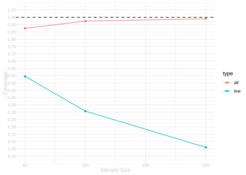
Here are the coverage rates for each estimator at each sample size. The difference in sample means works more or less as we’d like. Coverage is always pretty good and is roughly 95%—what we claim—in larger samples. The line-based estimator does the opposite. Coverage is bad in small samples and worse in larger ones.
Why does this happen? We worked out the relationship between bias and coverage in Chapter 15. The key formula is \[ \text{coverage} = \Phi\qty(1.96 - \frac{\text{bias}}{\text{se}}) - \Phi\qty(-1.96 - \frac{\text{bias}}{\text{se}}) \] where \(\Phi\) is the standard normal CDF. When bias is zero, this gives 95%. But as bias/se grows, coverage drops. At bias/se = 1, coverage is about 83%. At bias/se = 2, it’s about 48%.
Lessons
A Back-of-the-Envelope Calculation
Suppose we’ve got misspecification, but only a little bit. We’re doing a pilot study with sample size \(n=100\). And we’re sure that our estimator’s bias is less than half its standard error.
Question 1. What’s the coverage of our 95% confidence intervals?
Answer. At least 92%.
Now suppose we’re doing a follow-up study with sample size \(n=1600\). And we’re using the same estimator. Bias is the same. Question 2. What’s the coverage of our 95% confidence intervals? Assume our estimator’s standard error is proportional to \(\sqrt{1/n}\). They almost always are. For estimators we’ll talk about in this class, always. That means it’ll be \(\sqrt{1/1600} / \sqrt{1/100}=\sqrt{1/16}=1/4\) of what it was in the pilot study.
Answer. At least 48%. Here’s why. \[ \text{If } \ \frac{\text{bias}}{\text{pilot se}} \le 1/2 \ \text{ and } \ \text{follow-up se} = \frac{\text{pilot se}}{4}, \ \text { then } \ \frac{\text{bias}}{\text{follow-up se}} = 4 \times \frac{\text{bias}}{\text{pilot se}} \le 2. \]
Be Careful Using Misspecified Models
You might have an unproblematic level of bias in a small study. That same amount of bias can be a big problem in a larger one. In our gym-subsidy example, a line was pretty badly misspecified. That means we have to go pretty small to get an unproblematic level of bias. Here are the coverage rates at sample sizes 10, 40, and 160. We include two versions: an approximation calculated using our formula, and the actual coverage based on simulation. These differ a bit when our simplifying assumptions aren’t roughly true, e.g., accuracy of the normal approximation to the sampling distribution. This is a bigger problem in small samples than in large ones.
\[ \small{ \begin{array}{c|ccccc} n & \text{bias} & \text{se} & \frac{\text{bias}}{\text{se}} & \text{calculated coverage} & \text{actual coverage} \\ \hline 10 & 1.07 & 1.60 & 0.67 & 90\% & 84\% \\ 40 & 1.07 & 0.74 & 1.44 & 70\% & 66\% \\ 160 & 1.07 & 0.35 & 3.03 & 14\% & 13\% \\ \end{array} } \]
It’s Best to Use a Model That’s Not Misspecified
If You’re Fitting a Line, Do It Cleverly
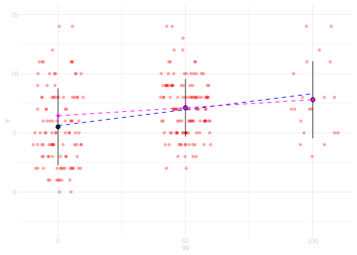
If we’re estimating \(\tau(100)\), we can use a line fit to the observations with \(W=50\) and \(W=100\). Then, since we’ve effectively got a binary covariate, it goes through the subsample means. And we end up with the difference in means estimator. We know that’s unbiased.
Next Week
We’ll see a more general version of this trick. We can fit misspecified models and still get unbiased estimators of summaries. We just have to fit them the right way. We’ll use weighted least squares with weights that depend on the summary. In this case, we give zero weight to observations with \(W=0\) and equal weight to the others.
Each participant’s potential outcomes are plotted as three connected circles. The realized outcome is filled in; the others are hollow. The proportion of participants receiving each treatment are indicated by the purple bars.↩︎
See our Lecture on Causal Inference.↩︎